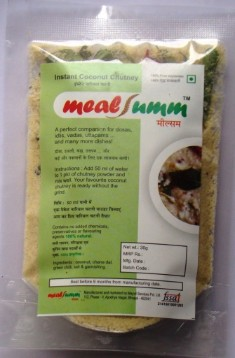
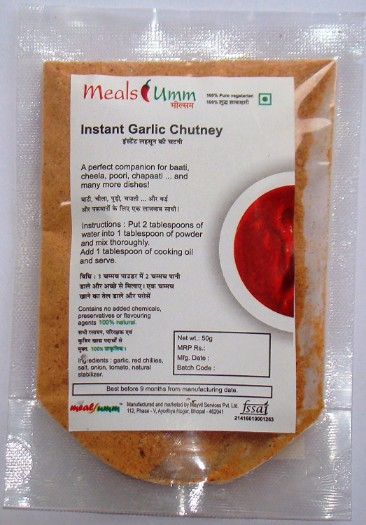
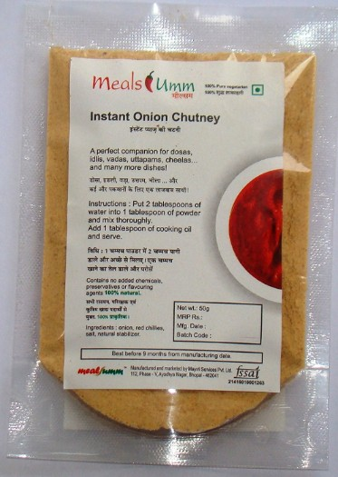
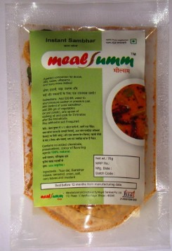
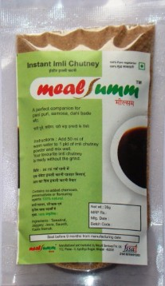
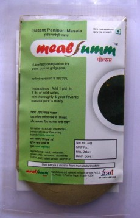
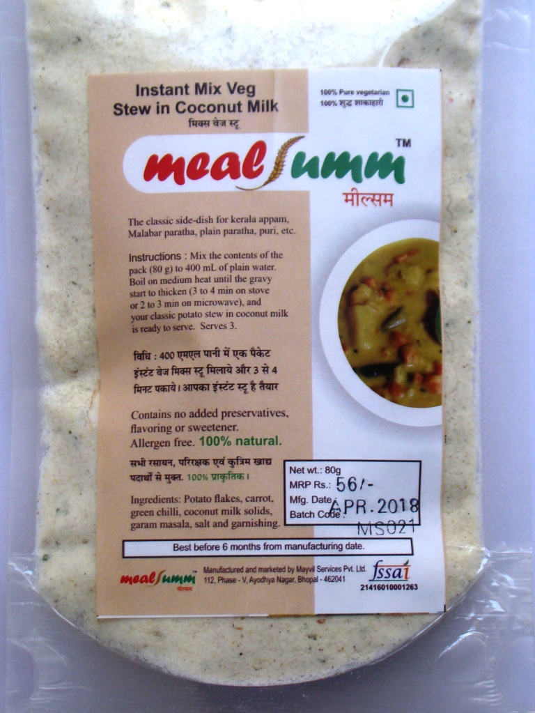
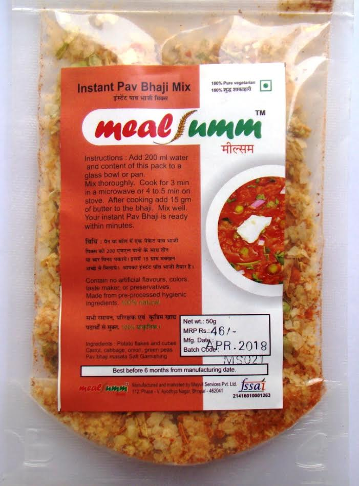

Your favourite dishes without the grind. Welcome to Mealsumm Online Store
Mealsumm presents a range of chutneys and spice mixes to enhance the taste of your dishes which can be readied quickly and can be stored at home for a long time. Our products can be prepared without a single drop of oil and take little to no time to prepare, with only water to be added. You can buy any of our products online instantly below - click here to begin.
Our products are made with love from traditional recipes and are authentic in taste to how it should be.
We offer the following product lines:
Mealsumm Instant Chutneys: Delicious classic chutneys in an easy to carry powder form. Just add water, mix and it's ready to eat!
Mealsumm Spice Mixes: Make the most delicious dishes instantly. Adding oil is absolutely optional. Just add one ingredient - everything else is in the packet. The best taste guaranteed, every time!
Mealsumm Curry Mixes: The ultimate in taste and convenience. Eliminate all the work in making your favourite dishes - just add water and cook for 3-4 minutes. And it's ready!
All Mealsumm products are 100% natural and vegetarian, and contain no added preservatives, artificial colours or flavours.
You can order any of our products online instantly below, or to buy different products together conveniently, click here.
Our products are also available on Amazon.in.
Mealsumm Tutorial: The fastest South Indian Breakfast you'll ever make
South Indian Range
Combo Packs

Instant South Indian Breakfast Combo: The all-in-one box to make a delicious South Indian breakfast instantly. Contains 2 packets of our Instant Sambar, 2 packets of our Instant White Coconut Chutney, and 1 packet each of our Instant Onion Chutney and Instant Garlic Chutney. Everything ready in about 5 minutes!
Return to the quick navigation menu
Chutneys
Instant Kerala White Coconut Chutney: The classic chutney for dosa, idli and other South Indian snacks just got better. No more sweating it out in the kitchen for a delicious bowl to accompany your breakfast. Just add water, mix and serve.

Mysore Garlic chutney: Tangy, spicy, deliciously garlicky and perfect for any savoury snack - be it momos or nachos or khakhras, dosa-idli-vada, or even samosa. It can be added to any curry to increase the gravy. The most versatile chutney. Add water, mix and serve. Oil is strictly optional if your taste buds desire.

Kerala Onion chutney: The famed ulli chutney loved across households in Kerala and the best friend to a crisp masala dosa, fluffy idli, and the perfect vada. Spicy and delicious, made for idli, dosa, vada, uttappam and more. Just add water and serve. Oil is strictly optional if your taste buds desire.
Return to the quick navigation menu
Spice Mixes
Instant sambhar: Make the most classic South Indian dish instantly. Just add vegetables, water and an entire packet, and cook for a few minutes. As traditional sambar should be, and in less than 10 minutes.
Return to the quick navigation menu
Street Style Chaat Range
Chutneys
Instant imli chutney: The perfect companion to any chaat, now easy to prepare. Add water, mix and serve it with your favourite chaat or tea-time snacks.
Return to the quick navigation menu
Spice Mixes
Instant Pani Puri Water: The tangy, delicious pani puri water without any hassle. Spicy, quick and prepares 1 litre for your pani puri marathons.
Return to the quick navigation menu
Curry Mixes
Instant Potato Stew In Coconut Milk for Appam: The classic side dish to soft warm appams and even paranthas, now instant and with the very same taste as the freshest stew. Contains all the spices, flavorings and vegetables. Just add water and cook for 3-4 mins.
Return to the quick navigation menu

Instant Pav Bhaji: Everybody’s favourite street food now ready in an instant. Contains all the spices, flavorings and
vegetables. Just add water and cook for 3-4 mins.
Return to the quick navigation menu
Many more products to be added shortly.